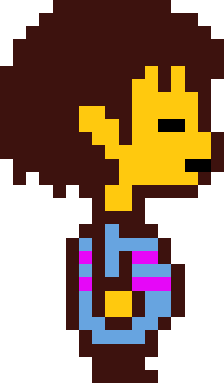
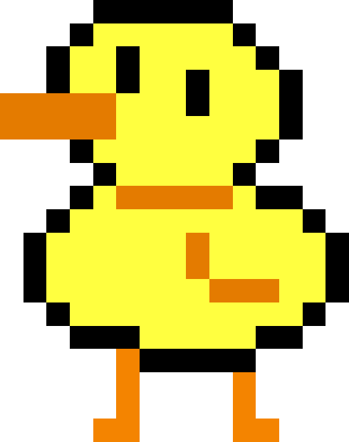

<section id="undertale-navigation-menu-container" @fadeIn_fadeOut_longer>
  <div id="navigation-bg-container">
    <div id="navigation-menu-btns-container">
      <button
        class="navigation-menu-btns"
        mat-icon-button
        (mouseenter)="mouseEnterOrLeaveSFX()"
        (click)="playClickSound(); changeToNextLocation('previous')"
      >
        <mat-icon>keyboard_arrow_left</mat-icon>
      </button>
      <span id="navigation-menu-location-span">{{ currentLocation() }}</span>
      <button
        class="navigation-menu-btns"
        mat-icon-button
        (mouseenter)="mouseEnterOrLeaveSFX()"
        (click)="playClickSound(); changeToNextLocation('next')"
      >
        <mat-icon>keyboard_arrow_right</mat-icon>
      </button>
    </div>
    
    
    
  </div>
</section>
